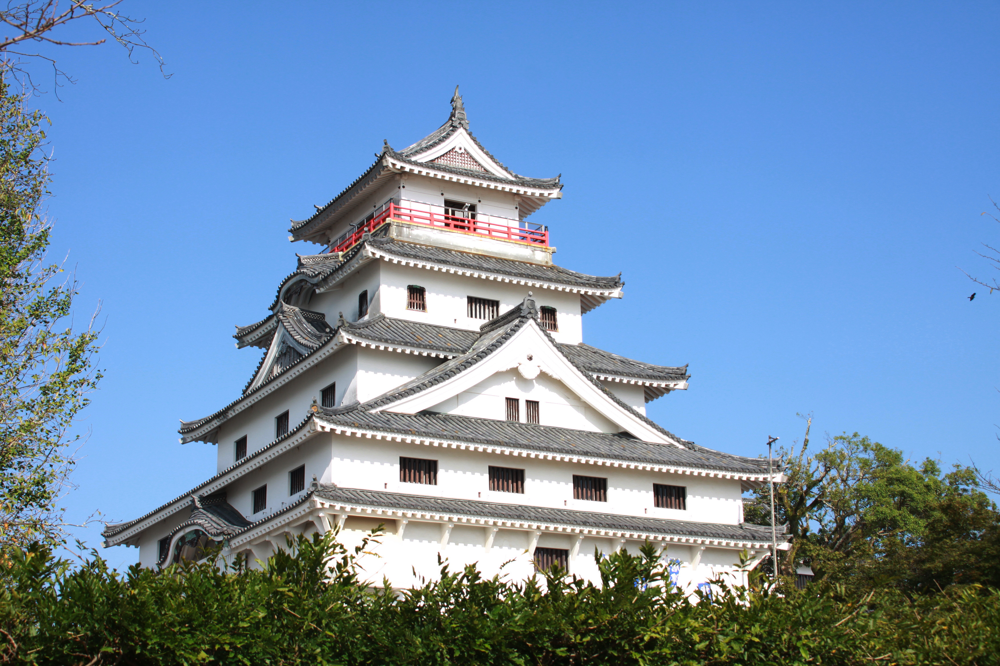

佐賀県 唐津市
唐津の観光ガイド
海と城下町、旬の味。唐津の"ちょうどいい"を巡る
玄界灘に面した城下町・唐津は、歴史と自然、そして美食が揃う九州屈指の観光エリアです。
HIMOROGIを拠点に、のんびりと唐津の魅力を巡ってみませんか。
- schedule 滞在目安：1泊2日〜2泊3日がおすすめ
- directions_car 移動手段：車があると便利。主要スポットは施設から15分圏内
- restaurant 食事について：朝市や周辺の海鮮・佐賀牛を楽しめます
- wb_sunny ベストシーズン：春の桜、秋の唐津くんちが特におすすめ
- family_restroom お子様連れ：海水浴や体験スポットも充実
アクセスマップ
お問い合わせ
ご質問・ご相談がございましたら、
お気軽にお問い合わせください。